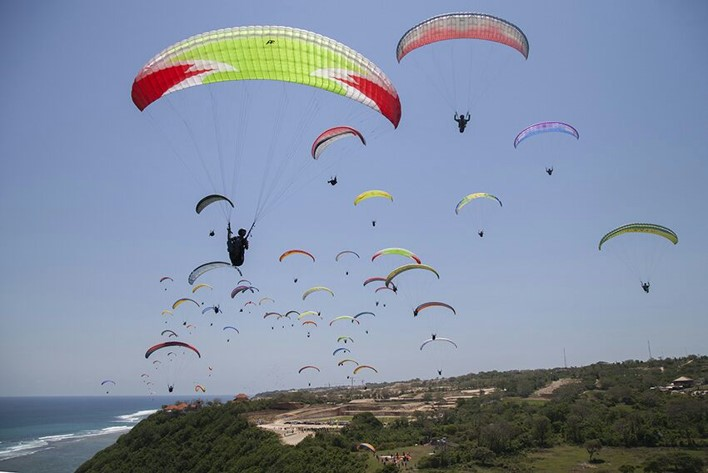

TROI Activities
- Education Program.
- Event Organization (EO).
- Tourism Guide.
- Tourism and Extreme Sport Consultation.

TROI Trail Running 2020

MURI Record Breaking for most paragliding flights with 120 pilots